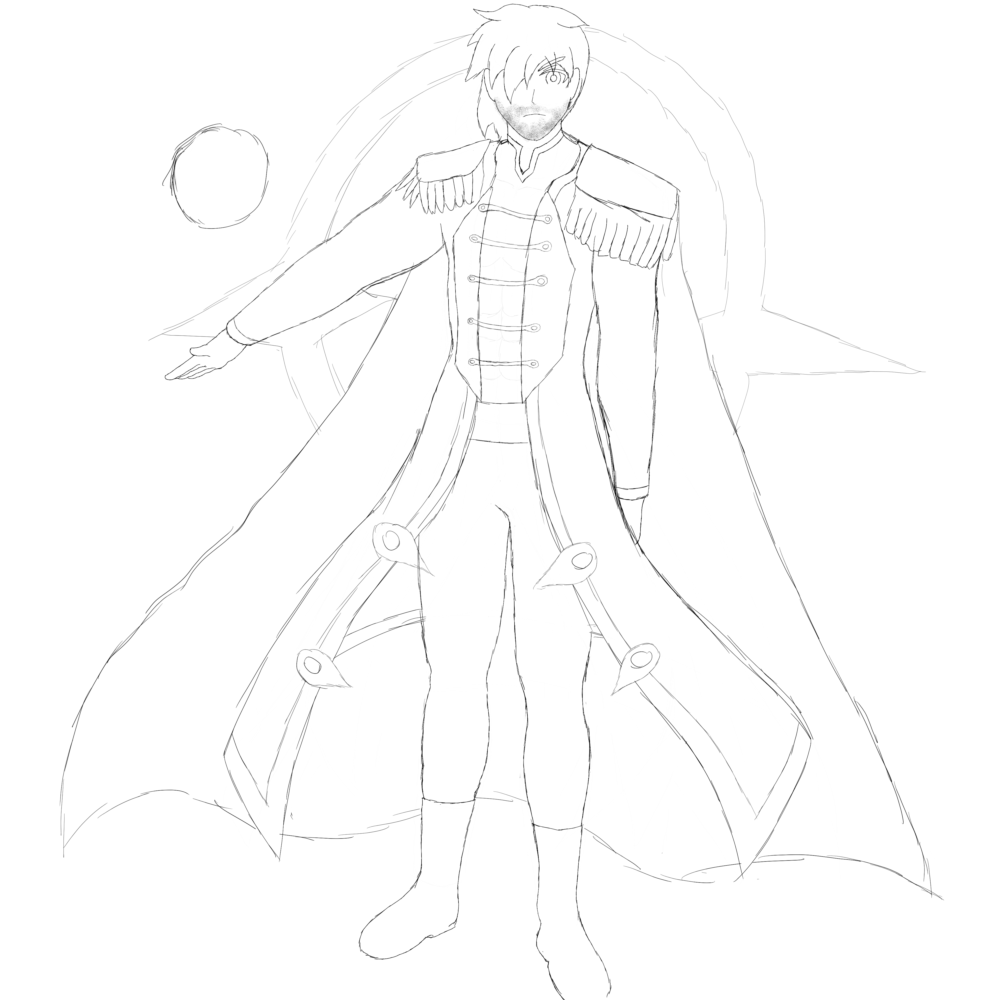

Uther Lux
Uther's current appearance
Name: Uther Lux
Gender: Male
Height: 193.04 cm
Weight: 82 kg
Age: 525,431 years
Uther Lux is the Cosmonian of Light, he is well known for his unparalleled speed and precision in a similar way to Tiamat. He is the second most powerful Omnerian Cosmonian Hybrid behind Kalish and the second in the most creative behind Ophilia.
Uther is a tall man with medium build. He is considered by many humans as the ideal knight due to his appearance. He wears a blue and light gray top with a golden collar like outline near his neck, light gray trousers with golden marks, gleaming white boots, and a long coat that has his personal fiery patterns inscribed into the silver fabric. He also wears a silver armor but nowadays that is rare due to the armor itself hindering his speed.
Uther's kindness is not something to be taken lightly, he is often friendly and even won't hesitate to strike a conversation. He is extremely protective of Tiamat, often getting in the way of each other and often gets annoyed by her as well. He is also extremely listening and will hold his father's words with high regard, albeit modifying it with his own judgment. He takes his fights to be honorable and straightforward, often sparing his opponent into taking him on again. However, Uther will be authorized to end a life if the opponent has lost all sense of reason or is in a deathmatch. Therefore he often asks what type of fight he and his opponent will engage in, which mostly turns out to be a deathmatch. Outside of combat, is a geek on tea and will never stop talking about it. He enjoys drinking black tea combined with milk and sugar. He enjoys English breakfast with his most favorite components being sausage and eggs.
Uther most astounding attribute is his speed, with almost instant reflexes. He can move at the speed of light and even go faster. At his maximum, he can travel across Omneria within years. However he is most knowledgeable in wielding weaponry, being one of the most skilled in every weapon he picks up, learning them within hours and mastering them within months.